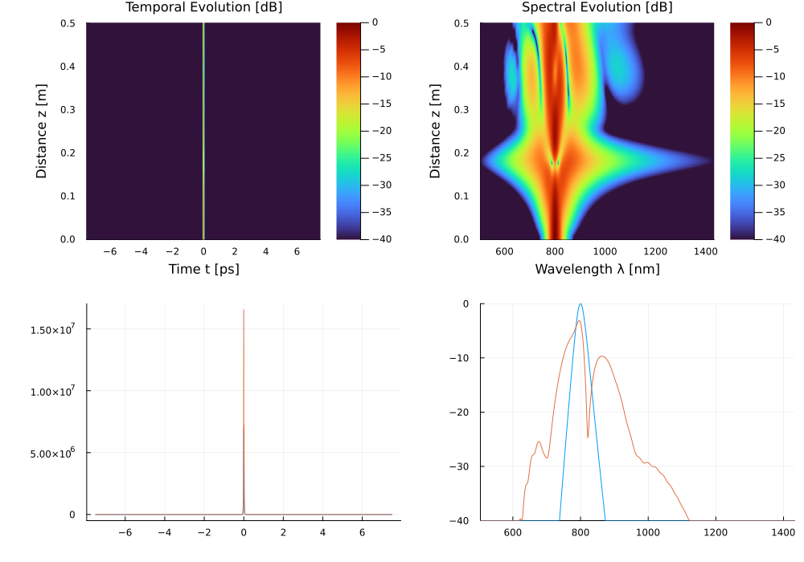

Example 7: Gas-Filled Hollow-Core PCF & Pressure-Tuned Solitons
This example demonstrates pulse propagation and pressure-tuned zero-dispersion wavelength ($\lambda_{\text{ZD}}$) shifting in an Argon-filled Hollow-Core Photonic Crystal Fiber (HC-PCF).
🔬 Literature Comparison & Physics
Hollow-core photonic crystal fibers (HC-PCF) guide optical pulses through a central gas-filled core (P. St.J. Russell et al., Nat. Photonics 8, 278 (2014)). Unlike solid silica fibers, gas guidance provides:
- Extremely Low Kerr Nonlinearity: $n_2 \approx 10^{-23}\text{ m}^2/\text{W/bar}$ ($>1000\times$ smaller than silica).
- Pressure-Tunable Dispersion: Varying gas pressure $P$ [bar] shifts the zero-dispersion wavelength $\lambda_{\text{ZD}}$ across the visible and near-infrared spectral range (Börzsönyi et al., Opt. Express 21, 21086 (2013)).
Because $n_2$ is so weak, reaching an interesting nonlinear regime (soliton compression, spectral broadening) requires either high pressure, high peak power, or both — a soliton order $N = \sqrt{\gamma P_0 T_0^2 / |\beta_2|}$ of order unity needs peak powers in the MW range even at tens of bar, unlike solid-core fibers where µJ-scale pulses already suffice. Below we use $P_0 = 7\text{ MW}$ (≈ 0.24 µJ, 30 fs) at 20 bar, giving $N \approx 3$ and a fission length $z_{\text{fiss}} = L_D/N \approx 16\text{ cm}$ — well inside the 0.5 m fiber, so the pulse undergoes clear higher-order-soliton compression and spectral broadening.
💻 Julia Code
using Soliton
grid = create_grid(2^13, 15e-12, 800e-9)
pulse = sech_pulse(grid, 7.0e6, 30e-15) # 7 MW peak power -> N ≈ 3
hcf = HollowCoreFiber(
radius = 15e-6, # 15 μm core radius (30 μm core diameter)
gas = :Ar, # Argon gas
pressure = 20.0, # 20 bar: enough gamma/dispersion for N ~ 3 at 7 MW
length = 0.5, # 0.5 m length
lambda0 = 800e-9,
grid = grid # continuous capillary dispersion grid
)
sol = solve(pulse, SimParams(; medium=hcf, raman_model=nothing, z_saves=200); progress=false)
peak_in = maximum(abs2, pulse.At)
peak_out = maximum(z -> maximum(abs2, sol.At[:, z]), axes(sol.At, 2))
println("Input Energy: ", round(pulse_energy(pulse) * 1e9, digits=3), " nJ")
println("Output Energy: ", round(pulse_energy(Pulse(sol)) * 1e9, digits=3), " nJ")
println("Peak compression: ", round(peak_out / peak_in, digits=1), "x")Input Energy: 238.264 nJ
Output Energy: 238.264 nJ
Peak compression: 5.7x